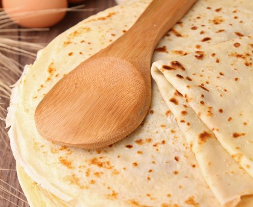
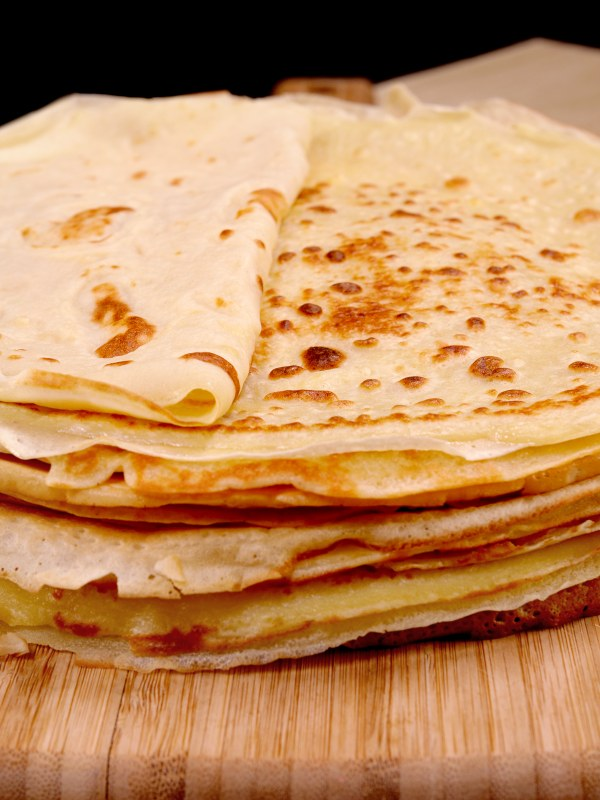

Pâte à crêpes simple
Selon nos informations, cette recette est compatible avec le régime suivant : végétarien
TEMPS TOTAL : 17 MIN


Ingrédients
- 5 oeufs
- 500 g de farine
- 1 litre de lait demi-écrémé
- 3 cuillères à soupe d'huile
- 1/2 verrre de bière
Préparation
Étape 1
Dans un saladier verser la moitié de la farine, puis rajouter les oeufs un à un, rajouter ensuite un peu de lait puis à nouveau de la farine... blablbla.
Étape 2
Enfin rajouter l'huile et la bière.
Étape 3
Laisser reposer 1 heure, votre pâte est prête.